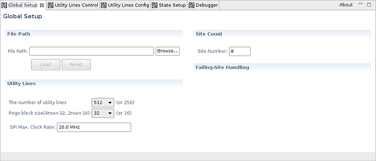
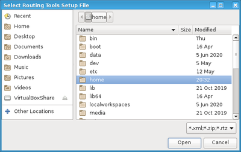
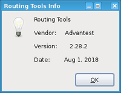

Routing Tools - Global Setup editor
The Global Setup editor of the Routing Tools enables you defining, loading and saving the XML file that contains all configuration data. In addition, the number of sites and other configuration parameters for utility lines are to be defined in this editor.

"File Path" and "Browse" button
Field File Path defines the XML file to be loaded or saved. You can type in the complete file path manually or you can click the Browse... button and select a folder and the file in the Select Routing Tools Setup File dialog:

In the Select Routing Tools Setup File dialog
- select the file and
- close the dialog by clicking the OK button.
The Routing Tools support text files or compressed files. The file name extension defines whether the file is saved as text file or as compressed file. The extension must be added manually:
- An uncompressed text file must end with ".xml".
- A compressed XML file must end with ".zip" or ".rtz".
We recommend using the ".rtz" file extension.
We also recommend, using folder testmethod in the root directory of the test program for storing the XML file.
"Load" button
The XML configuration file, which is defined in field File Path, can be loaded by clicking the Load button and saved by clicking he Save button of the V93000 Tool Bar.
Some hints for loading and saving the XML configuration file:
- Loading a configuration file will overwrite all unsaved changes in all Routing tools editors. Overwriting unsaved changes must be confirmed in a new dialog box that will pop up if unsaved changes are detected.
- Saving a configuration file will overwrite an already existing file however, a series of up to 10 recent file revisions will be kept on hard disk.
- The extension of the file ".zip" or "rtz" defines that the XML file is saved as compressed file.
- Saving the contents of all Routing Tools editor tabs can also be done by pressing the CTRL + S key combination simultaneously.
For creating a new XML configuration file, enter a valid file path and click the Save button. The new file will contain all settings that already have been entered in all Routing Tools editors. For an example refer to section "Example" below.
"Reset" button
Clicking the reset button clears all settings and initializes the Routing Tools editors. The cleared data includes the selected XML file including the file path, all configuration data and all state setups.
"Site Count"
The number of configured sites is to be defined in field Site Number. The number of configured sites must be the same as defined by the Define Site Number dialog of SmarTest. For more information refer to Defining additional test sites.
"Utility Lines"
The type of utility pogo blocks is to be defined in field Pogo block size.... The selection field supports 16 lines per block for the 2-row block or 32 lines per block for the 4-row pogo block. The selected value must be the same as defined as parameter utility_lines_per_pogoblock in the Technology file for a device.
Field SPI Max. Clock Rate defines the maximum clock for sequencer‑controlled utility lines. This value will be used by SmartRDI to generate the correct padding in order to slow down SPI clock speed with fast periods.
A floating-point value like "1.0 MHz" may be entered. The maximum clock frequency must not exceed "10 MHz". All frequencies are rounded to nearest 1 kHz. For more information refer to Sequencer-controlled utility lines.
"About" button
To display information about the current version of the Routing Tools editors, the About button may be pressed.

Example
The following code shows the contents of an XML file that has been generated by clicking on the Save button with no other settings defined.
<?xml version="1.0" encoding="UTF-8"?>
<!DOCTYPE DocType>
<switchtool>
<global version="" timestamp="2017-04-12 17:15:28.154" checksum="" sitecount="8">
<utility pogoblocksize="16" maxclockrate="" />
<pmux failsitehandling="" failsitestate="" maxclockrate="" />
</global>
<utility>
<ucontrol>
<block number="1" mode="static" group="" fram="" sclk="" sinp="" sout="" port="" />
<block number="2" mode="static" group="" fram="" sclk="" sinp="" sout="" port="" />
<block number="3" mode="static" group="" fram="" sclk="" sinp="" sout="" port="" />
<block number="4" mode="static" group="" fram="" sclk="" sinp="" sout="" port="" />
<block number="5" mode="static" group="" fram="" sclk="" sinp="" sout="" port="" />
<block number="6" mode="static" group="" fram="" sclk="" sinp="" sout="" port="" />
<block number="7" mode="static" group="" fram="" sclk="" sinp="" sout="" port="" />
<block number="8" mode="static" group="" fram="" sclk="" sinp="" sout="" port="" />
</ucontrol>
<uconfig />
</utility>
<pmux>
<pcontrol>
<module number="1" pogo1="865" id="01" group="" sda="" scl="" port="" />
<module number="2" pogo1="867" id="02" group="" sda="" scl="" port="" />
<module number="3" pogo1="869" id="03" group="" sda="" scl="" port="" />
<module number="4" pogo1="871" id="04" group="" sda="" scl="" port="" />
<module number="5" pogo1="873" id="09" group="" sda="" scl="" port="" />
<module number="6" pogo1="875" id="10" group="" sda="" scl="" port="" />
<module number="7" pogo1="877" id="13" group="" sda="" scl="" port="" />
<module number="8" pogo1="879" id="14" group="" sda="" scl="" port="" />
<module number="9" pogo1="881" id="05" group="" sda="" scl="" port="" />
<module number="10" pogo1="883" id="06" group="" sda="" scl="" port="" />
<module number="11" pogo1="885" id="07" group="" sda="" scl="" port="" />
<module number="12" pogo1="887" id="08" group="" sda="" scl="" port="" />
<module number="13" pogo1="889" id="11" group="" sda="" scl="" port="" />
<module number="14" pogo1="891" id="12" group="" sda="" scl="" port="" />
<module number="15" pogo1="893" id="15" group="" sda="" scl="" port="" />
<module number="16" pogo1="895" id="16" group="" sda="" scl="" port="" />
</pcontrol>
<pconfig />
</pmux>
<setup>
<header sequence="" offWait="" onWait="" wait="">
<list />
</header>
<states />
</setup>
</switchtool>Functional changes
- Introduced in SmarTest 7.4.4
- SmarTest 7.5.1: New "Reset" button
- SmarTest 7.5.1: Option "continue" of the "Failing-site Handling" is no longer available.